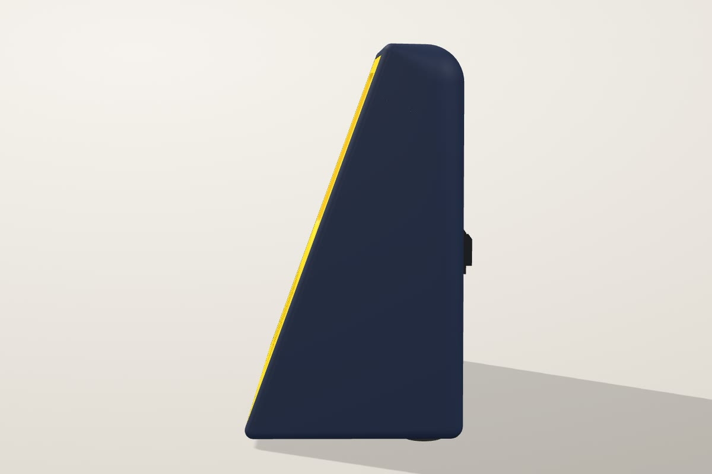
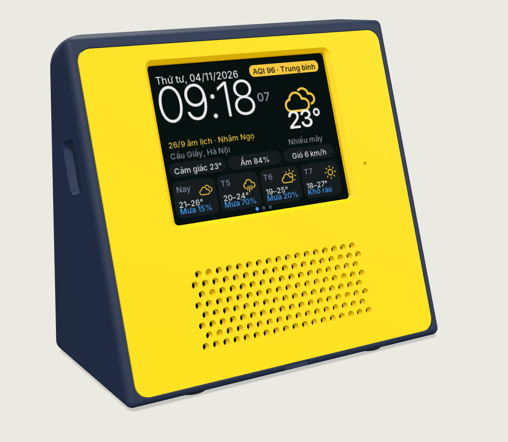
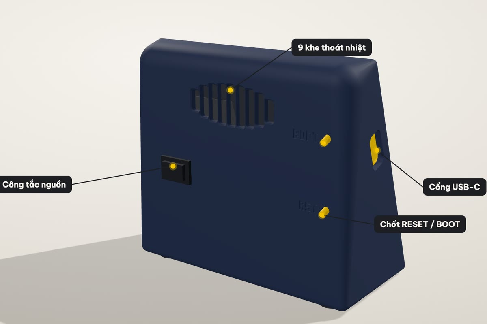
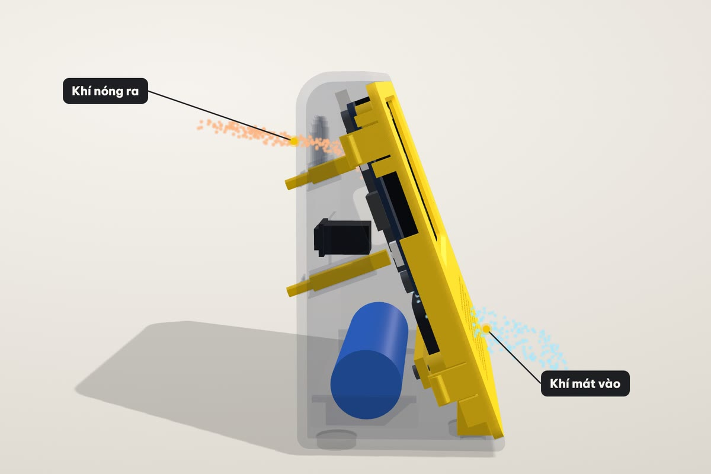
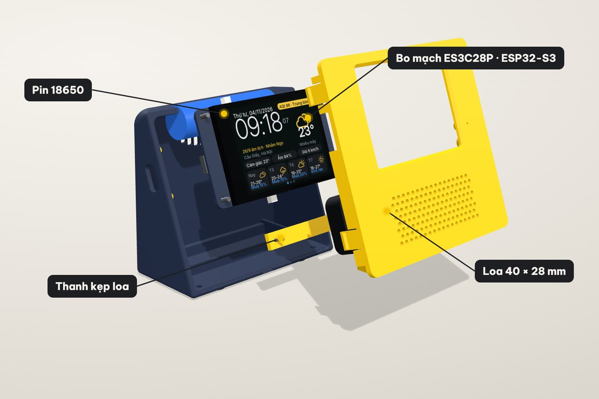
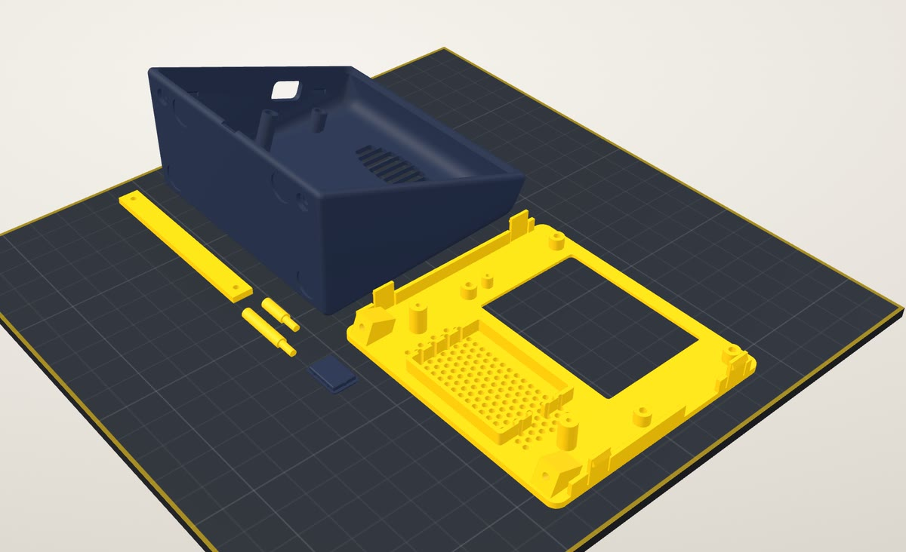

Mặt trước ngả 20°
Ngồi bàn là mắt nhìn thẳng vào màn hình. Màn cảm ứng nằm ngang, bên dưới là lưới loa chấm tròn có vải chắn bụi, micro ở mép phải.
Trợ lý AI nói tiếng Việt, nhạc theo yêu cầu, đài VOV, khung ảnh, dẫn đường Waze, báo thức và lịch âm, trên một màn hình cảm ứng 2,8″. Vỏ tự in ở nhà, mặt trước cài bằng nẫy.

Một vòng quanh vỏ in 3D, nhìn xuyên vào bên trong, rồi đi qua từng ứng dụng, có tiếng thật của loa.
Khối nêm 104 × 52 × 92 mm, vừa một góc bàn. Năm chi tiết nằm gọn trên một bàn in, không cần support.

Ngồi bàn là mắt nhìn thẳng vào màn hình. Màn cảm ứng nằm ngang, bên dưới là lưới loa chấm tròn có vải chắn bụi, micro ở mép phải.

Công tắc nguồn và hai chốt bấm RESET / BOOT để nạp firmware mà không phải mở vỏ. Cổng sạc USB-C nằm bên hông trái.

Khí mát vào qua lưới loa ở dưới, nóng lên rồi thoát ra 9 khe sau lưng ở trên. Vừa sạc vừa phát nhạc, trong vỏ vẫn mát.

Loa 40 × 28 mm nằm trong khung riêng, thanh kẹp ép chặt. Mạch bắt 4 trụ sau cửa sổ màn hình. Pin 18650 nằm trong khay in liền thân.

File 3MF đã gán sẵn màu cho từng chi tiết. Máy có bộ đổi nhựa (AMS, MMU, CFS…) in cả bộ trong một lần; máy một màu thì in riêng từng màu. Hết khoảng 97 g nhựa.
Màn chính có ba trang: đồng hồ và thời tiết, lịch âm, biến động số dư. Vuốt xuống mở bảng điều khiển; vuốt lên mở menu hai trang, vuốt vòng tròn liên tục.

Gọi “Hey Ivy” rồi nói tiếng Việt tự nhiên: hỏi thời tiết, mở nhạc, mở đài, đặt báo thức, hẹn giờ. Chữ hiện ngay trên màn, giọng trả lời phát qua loa.

Nói tên bài, loa tự tìm trên Zing MP3 hoặc YouTube rồi phát. Có ảnh bìa, sóng nhạc; viên nhạc nhỏ nổi trên mọi màn để điều khiển nhanh.

VOV1, VOV2, VOV3, VOV Giao thông Hà Nội và TP.HCM, VOH. Chạm hoặc vuốt để đổi kênh.

Lúc rảnh, loa chiếu ảnh từ album Google Photos bạn chọn, kèm giờ và thời tiết.

Đặt trên xe: hướng rẽ, làn đường, tốc độ, biển giới hạn và cảnh báo camera, lấy từ Waze trên điện thoại.

Đặt bằng tay hoặc bằng giọng nói, lặp theo thứ. 10 âm báo có sẵn, từ gà gáy, chim hót tới chuông cổ điển, hoặc nhạc trên thẻ nhớ.

Giờ to, nhiệt độ, độ ẩm, chất lượng không khí và dự báo 4 ngày cho nơi bạn ở.

Lịch tháng có ngày âm, tiết khí, ngày hoàng đạo, hắc đạo và giờ tốt trong ngày.

Vuốt từ mép trên xuống ở bất cứ màn nào: âm lượng, độ sáng, màu đèn LED, xoay màn hình 180°.

Lưới 4 × 2 kiểu điện thoại, hai trang, vuốt vòng tròn. Vuốt lên trong một ứng dụng là về lại menu.

Màn hình tự dịu, chỉ còn đồng hồ to dễ nhìn; thông báo được đọc thật nhỏ. Tự bật theo giờ bạn đặt.

Quét mã trên loa là mở trang cài đặt: Wi-Fi, album ảnh, giờ ban đêm, máy chủ trợ lý. Không cần cài app.

Xem nhanh Wi-Fi, pin, thẻ nhớ, bộ nhớ, nhiệt độ chip và máy chủ đang dùng.
Tiền vào là “ting” rồi đọc to số tiền, màn hình hiện người gửi. Tiện cho quầy bán hàng, và chỉ là một trong các ứng dụng của loa.

Mã VietQR hiện trên loa, gõ số tiền ngay trên màn. Lưu được 3 tài khoản, vuốt để đổi.

Đang mở QR thì “Đã nhận” hiện đè lên mã. Nhạc tự nhường, đài tạm dừng rồi phát tiếp.

Lưu trên thẻ nhớ, có tổng thu chi. Mất mạng thì có mạng lại loa nhận bù, không sót giao dịch.
Mạch mua sẵn, vỏ tự in.
Không cần lập trình. In vỏ, lắp mạch, nhấp đúp để nạp, rồi cài đặt bằng điện thoại.
In 5 chi tiết từ file 3MF có sẵn: một lần trên máy nhiều màu, hoặc riêng từng màu. Cần thêm mạch ES3C28P (kèm loa), một pin 18650 và một công tắc nhỏ.
Cắm mạch vào máy tính bằng USB-C rồi nhấp đúp nap-firmware.command. Cập nhật về sau vẫn giữ Wi-Fi và cài đặt.
Vào Wi-Fi “Xiaozhi-xxxx” của loa để chọn mạng nhà. Sau đó quét mã trên loa để mở trang cài đặt: album ảnh, giờ ban đêm, tài khoản VietQR.
Mặc định là xiaozhi.me. Bạn có thể đổi sang GM Bot hoặc máy chủ của riêng mình trong trang cài đặt của loa.
Được. In riêng từng màu bằng các file STL lẻ: thân và nắp bịt một màu, mặt trước, thanh kẹp và 2 chốt màu còn lại. Máy có bộ đổi nhựa thì mở file 3MF, màu đã gán sẵn, in cả bộ một lần. Cần bàn in từ 220 × 220 mm.
Có 2 bản: lưng xanh than hoặc lưng đen, cùng mặt trước vàng. File in của hai bản giống nhau; muốn màu nào thì nạp nhựa màu đó. Màu khai báo ở một chỗ trong mã nguồn vỏ, đổi màu khác cũng dễ.
Không. Mọi cài đặt làm trên trình duyệt điện thoại, qua trang cài đặt của loa. Chỉ phần báo giao dịch cần một app chuyển tiếp thông báo.
Loa không đăng nhập ngân hàng. Điện thoại của bạn vẫn nhận thông báo biến động số dư như thường; một app chuyển tiếp thông báo (có bản Android và iPhone) gửi nội dung đó sang loa, qua mạng Wi-Fi trong nhà hoặc qua máy chủ.
Khi có mạng lại, loa nhận bù các giao dịch còn thiếu và lưu đủ vào lịch sử. Khoản nào cũ hơn 5 phút thì chỉ hiện và lưu, không đọc to, để loa không đọc dồn một loạt.
Loa Ting là một dự án của viennv.dev. Firmware dựa trên Xiaozhi ESP32, một dự án mã nguồn mở, được viết lại giao diện tiếng Việt và thêm nhạc, đài, khung ảnh, Waze HUD, báo thức, lịch âm và báo chuyển khoản.